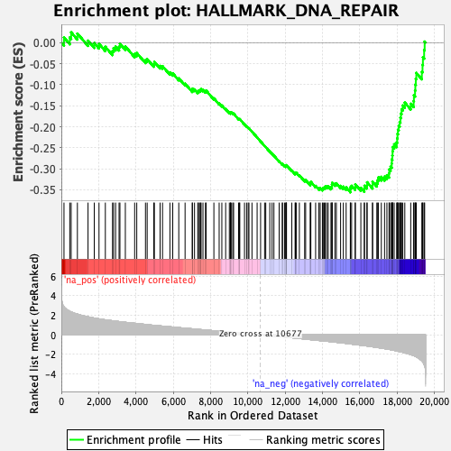
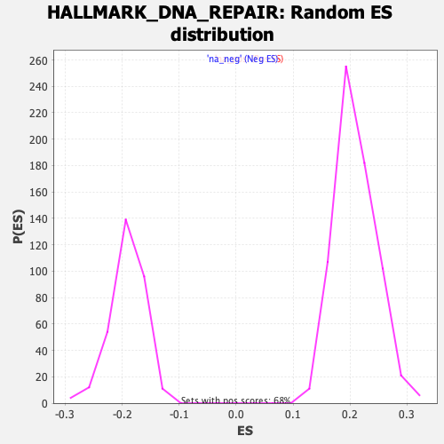

| | | Dataset | CK_basal |
| Phenotype | NoPhenotypeAvailable |
| Upregulated in class | na_neg |
| GeneSet | HALLMARK_DNA_REPAIR |
| Enrichment Score (ES) | -0.35580462 |
| Normalized Enrichment Score (NES) | -1.856898 |
| Nominal p-value | 0.0 |
| FDR q-value | 0.0023811173 |
| FWER p-Value | 0.005 |
Table: GSEA Results Summary

Fig 1: Enrichment plot: HALLMARK_DNA_REPAIR
Profile of the Running ES Score & Positions of GeneSet Members on the Rank Ordered List
| SYMBOL | RANK IN GENE LIST | RANK METRIC SCORE | RUNNING ES | CORE ENRICHMENT | | 1 | LIG1 | 142 | 2.860 | 0.0120 | No |
| 2 | SF3A3 | 452 | 2.409 | 0.0123 | No |
| 3 | POLR2I | 527 | 2.347 | 0.0244 | No |
| 4 | RFC5 | 861 | 2.124 | 0.0216 | No |
| 5 | NT5C | 1431 | 1.846 | 0.0047 | No |
| 6 | VPS37B | 1766 | 1.717 | -0.0010 | No |
| 7 | TAF1C | 2019 | 1.641 | -0.0029 | No |
| 8 | NME3 | 2359 | 1.541 | -0.0099 | No |
| 9 | CANT1 | 2744 | 1.442 | -0.0200 | No |
| 10 | PDE4B | 2800 | 1.428 | -0.0132 | No |
| 11 | NELFB | 2909 | 1.404 | -0.0093 | No |
| 12 | ADA | 3095 | 1.359 | -0.0097 | No |
| 13 | ITPA | 3141 | 1.349 | -0.0029 | No |
| 14 | TARBP2 | 3431 | 1.283 | -0.0091 | No |
| 15 | POLL | 3930 | 1.182 | -0.0268 | No |
| 16 | APRT | 4043 | 1.162 | -0.0247 | No |
| 17 | RFC2 | 4510 | 1.068 | -0.0416 | No |
| 18 | ELL | 4601 | 1.047 | -0.0391 | No |
| 19 | GTF2H3 | 4956 | 0.976 | -0.0508 | No |
| 20 | RAE1 | 4987 | 0.969 | -0.0458 | No |
| 21 | TAF6 | 5293 | 0.917 | -0.0553 | No |
| 22 | TP53 | 5424 | 0.894 | -0.0560 | No |
| 23 | PRIM1 | 5819 | 0.828 | -0.0707 | No |
| 24 | POLA2 | 5972 | 0.800 | -0.0732 | No |
| 25 | DGUOK | 6295 | 0.740 | -0.0848 | No |
| 26 | AK3 | 6633 | 0.682 | -0.0976 | No |
| 27 | POLR2D | 7020 | 0.619 | -0.1133 | No |
| 28 | UMPS | 7023 | 0.618 | -0.1092 | No |
| 29 | ZNF707 | 7140 | 0.599 | -0.1112 | No |
| 30 | POLA1 | 7313 | 0.568 | -0.1162 | No |
| 31 | NELFE | 7351 | 0.559 | -0.1143 | No |
| 32 | SDCBP | 7410 | 0.548 | -0.1136 | No |
| 33 | RFC4 | 7462 | 0.539 | -0.1126 | No |
| 34 | POLR3GL | 7492 | 0.535 | -0.1105 | No |
| 35 | HPRT1 | 7592 | 0.520 | -0.1121 | No |
| 36 | POLD4 | 7726 | 0.497 | -0.1156 | No |
| 37 | CDA | 7759 | 0.492 | -0.1139 | No |
| 38 | NT5C3A | 8177 | 0.425 | -0.1326 | No |
| 39 | GPX4 | 8460 | 0.375 | -0.1446 | No |
| 40 | RPA2 | 8604 | 0.353 | -0.1496 | No |
| 41 | PDE6G | 8808 | 0.319 | -0.1579 | No |
| 42 | POLR2C | 9006 | 0.283 | -0.1662 | No |
| 43 | POM121 | 9065 | 0.273 | -0.1673 | No |
| 44 | RNMT | 9066 | 0.273 | -0.1655 | No |
| 45 | NUDT21 | 9106 | 0.266 | -0.1657 | No |
| 46 | CMPK2 | 9189 | 0.251 | -0.1682 | No |
| 47 | TAF12 | 9234 | 0.242 | -0.1689 | No |
| 48 | ADRM1 | 9502 | 0.199 | -0.1813 | No |
| 49 | SMAD5 | 9542 | 0.193 | -0.1820 | No |
| 50 | RAD51 | 9566 | 0.189 | -0.1819 | No |
| 51 | ERCC8 | 9818 | 0.146 | -0.1939 | No |
| 52 | ZWINT | 9931 | 0.127 | -0.1988 | No |
| 53 | POLR1C | 10014 | 0.115 | -0.2022 | No |
| 54 | MPG | 10057 | 0.109 | -0.2037 | No |
| 55 | DGCR8 | 10219 | 0.079 | -0.2114 | No |
| 56 | NELFCD | 10495 | 0.036 | -0.2254 | No |
| 57 | SURF1 | 10681 | -0.001 | -0.2349 | No |
| 58 | BCAP31 | 10896 | -0.039 | -0.2457 | No |
| 59 | TAF9 | 10958 | -0.050 | -0.2485 | No |
| 60 | GTF3C5 | 11174 | -0.084 | -0.2591 | No |
| 61 | VPS37D | 11297 | -0.108 | -0.2646 | No |
| 62 | BRF2 | 11395 | -0.125 | -0.2688 | No |
| 63 | POLH | 11675 | -0.173 | -0.2820 | No |
| 64 | SSRP1 | 11844 | -0.201 | -0.2893 | No |
| 65 | ARL6IP1 | 11854 | -0.204 | -0.2884 | No |
| 66 | VPS28 | 11964 | -0.223 | -0.2925 | No |
| 67 | AGO4 | 12026 | -0.235 | -0.2941 | No |
| 68 | AK1 | 12047 | -0.237 | -0.2935 | No |
| 69 | ERCC2 | 12054 | -0.238 | -0.2922 | No |
| 70 | ALYREF | 12070 | -0.240 | -0.2914 | No |
| 71 | GTF2H5 | 12355 | -0.292 | -0.3040 | No |
| 72 | GTF2H1 | 12532 | -0.329 | -0.3109 | No |
| 73 | DUT | 12544 | -0.331 | -0.3092 | No |
| 74 | SNAPC5 | 12601 | -0.340 | -0.3098 | No |
| 75 | FEN1 | 12759 | -0.370 | -0.3154 | No |
| 76 | TMED2 | 13043 | -0.426 | -0.3272 | No |
| 77 | GMPR2 | 13096 | -0.436 | -0.3269 | No |
| 78 | POLR2F | 13341 | -0.486 | -0.3362 | No |
| 79 | CLP1 | 13360 | -0.490 | -0.3338 | No |
| 80 | SNAPC4 | 13374 | -0.491 | -0.3312 | No |
| 81 | MPC2 | 13630 | -0.538 | -0.3407 | No |
| 82 | PCNA | 13806 | -0.577 | -0.3458 | No |
| 83 | POLR3C | 13876 | -0.591 | -0.3454 | No |
| 84 | POLR2G | 13995 | -0.612 | -0.3473 | No |
| 85 | RPA3 | 14035 | -0.618 | -0.3452 | No |
| 86 | POLB | 14100 | -0.631 | -0.3442 | No |
| 87 | TK2 | 14144 | -0.641 | -0.3421 | No |
| 88 | NFX1 | 14225 | -0.655 | -0.3418 | No |
| 89 | POLD3 | 14304 | -0.669 | -0.3413 | No |
| 90 | RRM2B | 14453 | -0.696 | -0.3442 | No |
| 91 | GTF2B | 14502 | -0.706 | -0.3419 | No |
| 92 | NUDT9 | 14506 | -0.706 | -0.3373 | No |
| 93 | CCNO | 14520 | -0.711 | -0.3332 | No |
| 94 | ERCC1 | 14663 | -0.747 | -0.3355 | No |
| 95 | HCLS1 | 14742 | -0.759 | -0.3343 | No |
| 96 | ERCC5 | 14969 | -0.801 | -0.3406 | No |
| 97 | XPC | 15116 | -0.835 | -0.3425 | No |
| 98 | IMPDH2 | 15266 | -0.870 | -0.3443 | No |
| 99 | POLD1 | 15490 | -0.922 | -0.3496 | Yes |
| 100 | DDB2 | 15497 | -0.925 | -0.3436 | Yes |
| 101 | SUPT5H | 15560 | -0.941 | -0.3405 | Yes |
| 102 | BOLA2 | 15749 | -0.991 | -0.3435 | Yes |
| 103 | POLR1D | 15760 | -0.994 | -0.3373 | Yes |
| 104 | DDB1 | 16055 | -1.061 | -0.3453 | Yes |
| 105 | NME1 | 16239 | -1.105 | -0.3473 | Yes |
| 106 | RBX1 | 16250 | -1.106 | -0.3403 | Yes |
| 107 | USP11 | 16382 | -1.136 | -0.3394 | Yes |
| 108 | TAF10 | 16390 | -1.139 | -0.3320 | Yes |
| 109 | EIF1B | 16681 | -1.220 | -0.3388 | Yes |
| 110 | BCAM | 16682 | -1.220 | -0.3305 | Yes |
| 111 | ZNRD1 | 16911 | -1.284 | -0.3336 | Yes |
| 112 | TAF13 | 16957 | -1.298 | -0.3271 | Yes |
| 113 | NPR2 | 16998 | -1.309 | -0.3204 | Yes |
| 114 | GTF2A2 | 17152 | -1.352 | -0.3191 | Yes |
| 115 | NCBP2 | 17325 | -1.409 | -0.3185 | Yes |
| 116 | EDF1 | 17452 | -1.450 | -0.3152 | Yes |
| 117 | POLE4 | 17566 | -1.483 | -0.3110 | Yes |
| 118 | RAD52 | 17577 | -1.487 | -0.3014 | Yes |
| 119 | RFC3 | 17649 | -1.510 | -0.2949 | Yes |
| 120 | CSTF3 | 17708 | -1.535 | -0.2875 | Yes |
| 121 | POLR2H | 17714 | -1.536 | -0.2774 | Yes |
| 122 | POLR2E | 17744 | -1.547 | -0.2684 | Yes |
| 123 | POLR2K | 17755 | -1.550 | -0.2585 | Yes |
| 124 | GTF2F1 | 17762 | -1.555 | -0.2483 | Yes |
| 125 | RALA | 17842 | -1.586 | -0.2416 | Yes |
| 126 | MRPL40 | 17976 | -1.644 | -0.2374 | Yes |
| 127 | PNP | 18005 | -1.657 | -0.2276 | Yes |
| 128 | SAC3D1 | 18018 | -1.663 | -0.2170 | Yes |
| 129 | UPF3B | 18043 | -1.672 | -0.2069 | Yes |
| 130 | NME4 | 18085 | -1.694 | -0.1976 | Yes |
| 131 | ERCC3 | 18136 | -1.715 | -0.1886 | Yes |
| 132 | DAD1 | 18176 | -1.734 | -0.1789 | Yes |
| 133 | SEC61A1 | 18204 | -1.745 | -0.1685 | Yes |
| 134 | TSG101 | 18239 | -1.761 | -0.1583 | Yes |
| 135 | ERCC4 | 18303 | -1.784 | -0.1495 | Yes |
| 136 | GUK1 | 18411 | -1.835 | -0.1427 | Yes |
| 137 | STX3 | 18728 | -2.011 | -0.1454 | Yes |
| 138 | COX17 | 18885 | -2.119 | -0.1391 | Yes |
| 139 | POLR2A | 18899 | -2.133 | -0.1253 | Yes |
| 140 | CETN2 | 18960 | -2.182 | -0.1137 | Yes |
| 141 | REV3L | 18975 | -2.197 | -0.0996 | Yes |
| 142 | SUPT4H1 | 19000 | -2.215 | -0.0858 | Yes |
| 143 | POLR2J | 19028 | -2.250 | -0.0720 | Yes |
| 144 | TYMS | 19325 | -2.652 | -0.0694 | Yes |
| 145 | SRSF6 | 19361 | -2.738 | -0.0527 | Yes |
| 146 | ADCY6 | 19382 | -2.782 | -0.0349 | Yes |
| 147 | AAAS | 19447 | -3.033 | -0.0177 | Yes |
| 148 | DCTN4 | 19475 | -3.197 | 0.0025 | Yes |
Table: GSEA details [plain text format]

Fig 2: HALLMARK_DNA_REPAIR: Random ES distribution
Gene set null distribution of ES for HALLMARK_DNA_REPAIR